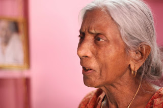
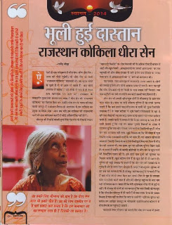
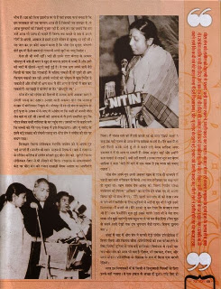
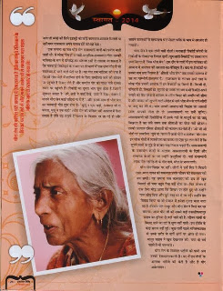

कभी राजस्थान कोकिला के रूप में राजस्थानी गायकी में अपनी धाक जमाये रखने वाली कलाकार धीरा सेन पर वीणा समूह की कला और संस्कृति को समर्पित मासिक पत्रिका ‘स्वर सरिता’ के जनवरी 2014 अंक में छपा यह आलेख शायद आपको पसंद आये: राजेंद्र बोड़ा
इस सुंदर पोस्ट को महफिल्म ब्लॉग पर पोस्ट करने की अनुमति देने के लिए श्री राजेन्द्र बोड़ा जी का विशेष धन्यवादहमने अपने कलाकारों को उपेक्षा और विस्मृति के अंधकार में धकेला है। उनके निष्प्रयोजन हो जाने के बाद उनकी उपेक्षा करने के हम इतने अभ्यस्त हो गये हैं कि हमारी ये धरोहरें हमारी नज़रों के सामने विलुप्त होती जा रहीं है और हमें इसका भान ही नहीं होता।


ऐसी ही एक शक्सियत है धीरा सेन। कौन धीरा सेन? आज की पीढ़ी पूछेगी। वो धीरा सेन जो कभी राजस्थान की कोकिला कहलाती थी।उम्र दराज लोगों से पूछते हैं तो वो आज भी कहते हैं: “क्या मीठी आवाज़ थी साहब”। “अरे उनके तो नाम से ही टाउन हाल खचाखच भर जाता था”। राजस्थान के तत्कालीन मुख्यमंत्री जयनारायण व्यास ने धीरा सेन को ‘राजस्थान कोकिला’ का खिताब दिया था। उन्होंने धीरा सेन के गायन की कद्र करके जयपुर में राजस्थान दिवस के आयोजन में इस गायिका का प्रमुख कार्यक्रम रखा। आज हम यदि इस गायिका को राजस्थानी गानों की लता मंगेशकर कह दें तो कोई अतिशयोक्ति नहीं होगी।जोधपुर की रिकॉर्ड कंपनी दुर्गा सिंह एंड सन के रिकॉर्ड लेबल‘मारवाड़ी रिकॉर्ड’पर धीरा सेन की सौ से अधिक रिकार्डें बाज़ार में आईं और खूब बिकी। आकाशवाणी पर उनकी आवाज़ घर-घर तक पहुंचती थी और श्रोता इंतज़ार में रहते थे कि कब रेडियो पर उनका गाना बजे। वे आकाशवाणी की ‘ए’ श्रेणी की कलाकार थीं।



यह पचास-साठ साल पुरानी दास्तान है। मगर उनके जमाने के लोगों को उनकी सुरीली और मीठी आवाज़ आज भी याद है। मगर यह पूछें कि धीरा सेन कहां गई तो किसी के पास जवाब नहीं मिलता। बस एक स्मृति है जो तभी उभरती है जब कोई उसकी याद दिलाता है।धीरा सेन की हमारी खोज शुरू होती है भीलवाडा से आए एक फोन कॉल से। फोन पर कोई हरिराम पूनिया हैं जो हमसे जानना चाहते हैं कि क्या हमारे पास धीरा सेन के गानों की कुछ रिकॉर्डिंग उपलब्ध हैं? वे‘स्वर सरिता’में भूले बिसरे संगीतकारों के बारे में छपे एक लेख को पढ़ कर बड़ा जतन करके हमारा फोन नंबर हासिल करते हैं। उनकी बातों से लगता है कि वे इस आवाज़ के भक्त हैं। मैं उनसे कहता हूं कि भाई घर जाकर पुरानी रिकार्डों के संग्रह में टटोलता हूं कि क्या धीरा सेन के गाये गानों के रिकॉर्ड मौजूद हैं। धीरा सेन नाम अनजाना नहीं लगा। मुझे विश्वास था कि मेरे संग्रह में कुछ रिकॉर्ड उनके राजस्थानी गानों के भी जरूर हैं। घर आकार खोजा तो मारवाड़ी रिकॉर्ड लेबल के सात ईपी रिकोर्ड्स मिल गए जिन में धीरा सेन की आवाज़ थी। यह खबर सुन कर हरिराम पूनिया खिल उठते हैं। वे बताते हैं उन्हों ने भी काफी कोशिशों से धीरा सेन के कुछ गानों की रिकॉर्डिंग एकत्र की है। हम दोनों एक दूसरे की सूचियों का मिलान करते हैं। कुछ कॉमन गाने हैं तो कुछ ऐसे हैं जो अलग हैं। पूनिया जी बड़ी उत्कंठा से बताते हैं कि धीरा सेन की गायकी के वे मुरीद हैं और वे उनसे मिल भी चुके हैं। कहां? जोधपुर में।

पूनिया जी को जब पता चलता है कि मैं जोधपुर जाने वाला हूं तो वे कहते हैं कि मैं वहां धीरा जी से जरूर मिल कर आऊं। फिर वे मुझ से लगातार फोन पर संपर्क करते रहते हैं और मेरे जोधपुर पहुंचने के बाद बस यही दरियाफ्त करना चाहते हैं कि मेरी मुलाक़ात धीरा जी से हुई या नहीं। मैं जोधपुर में लोगों से पता करता हूं कि क्या किसी को मालूम है कि धीरा सेन जोधपुर में ही रहती हैं तो सब तरफ से या तो जवाब मिलता है पता नहीं या फिर कि क्या वे अभी हैं? हरिराम पूनिया की मार्फत हम आखिर जोधपुर के चौपासनी हाउसिंग बोर्ड कॉलोनी में धीरा सेन के घर पहुंच ही जाते हैं।यह हमारे लिए सौभाग्य की बात है कि धीरा सेन आज भी हमारे बीच हैं। उम्र की जिस दहलीज पर वे हैं वहां हमारा फर्ज़ बनाता है कि इस कलाकार को वह सम्मान आज ही दें जिसकी वह हकदार है। वे आज गुमनामी की ज़िंदगी गुजार रहीं हैं। उन्हें हम यह जतायें कि हम उन्हें आज भी उतना ही चाहते हैं जितना तब चाहते थे जब वे अपने गीतों से अपनी, आवाज़ से हमारे हमारे जीवन में खुशबू भर रहीं थीं। यह जान कर हर कोई को आश्चर्य करता है कि धीरा सेन मूलतः बंगाली होते हुए भी कैसे मारवाड़ी गायन में अपने सुरों का जादू बिखेरा। ऐसा हो भी क्यों नहीं। भले ही उनके दादा बंगाल से आकार जोधपुर में बसे हों मगर वे खुद तो मरुधर प्रदेश में जन्मी हैं और इसी की माटी में खेलते कूदते बड़ी हुई है। वे एक क्षण अपने बायें बैठे किसी के साथ ठेट मारवाड़ी में बतिया सकती है तो दूसरे ही क्षण मेहमान नवाज़ी कर रही अपनी भतीजी को बंगला में कुछ निर्देश दे सकती हैं और तीसरे ही क्षण साथ में बैठे अन्य से हिन्दी में बात कर सकती हैं। मारवाड़ी में बोलेंगी तो ठेट ‘जोधपुरी टच’।
धीरा सेन को संगीत की वैतरणी में उस्ताद अली अकबर खान ने उंगली पकड़ कर उतारा। उस्ताद अली अकबर खान तब मारवाड़ दरबार में संगीतकार नियुक्त थे। जोधपुर में रह रहे बंगला समुदाय के दुर्गा पूजा के उत्सव में वे आए थे। संयोग था कि नन्ही सी बच्ची धीरा सेन वहां गा रही थी। बच्ची की आवाज़ से वे इतने प्रभावित हुए कि मोटर लेकर नन्ही गायिका के घर पहुंच गए। उसकी मां से कहने लगे कि बच्ची को मेरे पास भेजना मैं इसे सिखाऊंगा। और यूं सरोद के इतने बड़े उस्ताद की उंगली पकड़ कर धीरा सेन ने संगीत की राह पर कदम रखा। इसलिए विलक्षण फिल्म संगीतकार स्वर्गीय जयदेव को वे अपना गुरु भाई मानती हैं। जयदेव भी खान साहब के शिष्य थे। बाद में लखनऊ के मौरिस कॉलेज में संगीत सीखते हुए धीरा सेन को सुरीले फिल्म संगीतकार रोशन से भी सीखने को मिला।


लखनऊ के आकाशवाणी केंद्र पर धीरा सेन को गजल साम्राज्ञी बेगम अख्तर का आशीर्वाद मिला। मैं गज़ल गाने की तैयारी करके गई थी मगर रेडियो वालों ने कहा कि नहीं गज़ल तो आज बेगम साहिबा गा रहीं है। मैंने कहा मैं तो यही तैयारी करके आई हूं तो वे कहने लगे बेगम साहिबा अगर इजाजत दे दें तो आप गा सकती हैं। बेगम अख्तर आईं और उन्होंने कहा गाएगी ये लड़की। क्यों नहीं गाएगी। उनका गाना सुन कर बेगम साहिबा ने कहा “बेटी तेरे गले में एक प्यास है इस प्यास को बनाए रखना”।बेगम अख्तर आईं और उन्होंने कहा गाएगी ये लड़की। क्यों नहीं गाएगी। उनका गाना सुन कर बेगम साहिबा ने कहा “बेटी तेरे गले में एक प्यास है इस प्यास को बनाए रखना”
धीरा सेन अपने गुरु अली अकबर खान के साथ ही बालपने में वे पहली बार लता मंगेशकर से मिली। तब लता मंगेशकर का बड़ा नाम हो चुका था। खान साहब देव आनंद की फिल्म निर्माण संस्था नवकेतन की फिल्म ‘आंधियां’का संगीत देने बंबई गए तो अपनी शिष्या को भी साथ ले गए। “मैंने पहली बार लता जी को देखा। जब वे गाने की रिकॉर्डिंग के लिए स्टुडियो में आईं तो गुरु जी ने मुझे उनसे मिलवाया। मैं बच्ची थी। मैंने उनको छू कर देखा कि सचमुच लता जी हैं”। जब रिकॉर्डिंग शुरू हुई उससे पहले “लता जी ने मेरा हाथ थामा और मुझे वहां पड़े एक स्टूल पर ले जा कर बैठा दिया। फिर मुझ से कहने लगी देखो एक दम चुपचाप बैठी रहना। हिलना डुलना मत”।बंबई में बाद में धीरा सेन से मरफ़ी मेट्रो संगीत प्रतियोगिता में हिस्सा लिया और खिताब जीता। प्रतियोगियों की स्वर परीक्षा लेने के लिए फिल्मी दुनिया के पांच बड़े संगीतकार निर्णायक थे। इनमें चार नाम धीरा सेन को आज भी याद है नौशाद, सी रामचन्द्र, रोशन, और मदन मोहन। प्रतियोगिता के खिताब के रूप में मिला एक मरफ़ी रेडियो।
मगर इन निर्णायकों में से किसी ने हिन्दुस्तानी फिल्मों के लिए उनसे नहीं गवाया। ये एक प्रकार से अच्छा ही हुआ। यदि ऐसा हो जाता तो बंबई की सिने इंडस्ट्री को कोई कामयाब आवाज़ मिलती या नहीं मगर राजस्थान अपने नायाब हीरे को खो देता।
एक ज़माना था जब धीरा सेन राजस्थानी गानों की पर्याय मानी जाती थी। वे लोक गीत हों या चाहे आधुनिक राजस्थानी गीत। उनकी गायिका के रूप में प्रसिद्धि का अंदाजा इसी ले लगाया जा सकता है कि मारवाड़ी रिकोर्ड्स के लेबल पर दो भागों में एक लंबा गीत है जो रामदेवरा में भरने वाले मेले पर है। यह गीत एक नाटिका की तरह है जिसमें लोग मेले में शामिल होने के लिए रामदेवरा जाने को स्टेशन पर पहुँचते हैं टिकट लेते हैं और रामदेव पीर की गाथा गाते गंतव्य स्थान पर पहुँचते है। रिकॉर्ड का दूसरा भाग शुरू होता है जिसमें सूत्रधार कहता है “अरे अठी ने काईं देखे, ऊठी ने देख। पंडाल रे मायने धीरा सेन काईं बढ़िया गा री है”। और इसके साथ ही धीरा सेन का मारवाड़ी गीत शुरू होता है: “भूलूं न एक घड़ी, अजमल जी रा कंवरा, भूलूं न एक घड़ी”। धीरा सेन की कशिश भरी आवाज में ऐसा लगता है जैसे वह समूचे रेगिस्तान के विस्तार पर छा गई हो और सामने जातरूओं से खचाखच भरा पंडाल भक्ति के भाव से सरोबार हो गया हो।
धीरा सेन ने एक लंबी पारी खेली। मारवाड़ी रिकॉर्ड कंपनी के रिकोर्डों ले लेबल पर निगाह डालें। शुरुआती रिकॉर्डों पर उनका नाम छपा मिलता है ‘मिस धीरा सेन’। इस दौर के गानों में इस गायिका की आवाज़ में बालपन की सरलता का वैशिष्ठ्य है। बाद के रिकॉर्डों पर उनका नाम छपा मिलता है ‘श्रीमती धीरा सेन’ जब उनकी आवाज़ में उम्र का गाम्भीर्य झलकता है।
राजस्थान के लगभग सभी तरह के लोक गीत उनकी आवाज़ में इन रिकॉर्डों पर मिलते हैं। चिरमी हो, पणिहारी हो, हिचकी हो सुपणो हो उनके लगभग सभी रिकॉर्ड अपने जमाने की हिट परेड में शामिल थे। तीन मिनट की अवधि की सीमा में और बाज़ार को लुभाने वाले संगीत से सजे धीरा सेन के गाने लोगों पर जादू कर देते थे। मगर उनकी आवाज़ की मिठास का असली स्वाद आपको लेना हो तो आकाशवाणी पर उन्हें सुनिए। आकाशवाणी की रिकोर्डिंग्स में उनके गले के माधुर्य का जो जादू बिखरता है वह लंबे समय तक श्रोताओं का पीछा नहीं छोडता। उनकी आवाज़ रसिक श्रोताओं को कायल कर देती है। ‘ओ जी ओ गोरी रा लश्करिया’सुनें या ‘बागां में जाती गोरी रा साहेबा’धीरा सेन इन लोक गीतों में शास्त्रीयता का हल्का सा ऐसा पूत लगा देती है कि सुनने वालों के मुंह से बरबस वाह निकल पड़ती है। आकाशवाणी के राजस्थान के केन्द्रों के अलावा आकाशवाणी के दिल्ली और लखनऊ केन्द्रों पर भी उन्हों ने प्रस्तुतियां दी। वहां राजस्थानी लोक गीत नहीं हिन्दी के गीत गाये, मीरा के भजन गाये।
धीरा सेन शिखर पर रहीं। लोगों ने उन्हें सिर पे बिठाये रखा। मगर गायन की सफलता उनके जीवन की सफलता नहीं बन सकी। वह ज़माना जब कलाकार को दाद तो खूब मिलती थी मगर बहुत पैसा नहीं होता था। फिर जीवन में एक ऐसा मोड आया जब शिखर पर होते हुए भी उन्होंने गाना छोड़ दिया और पूरी तरह घर में रम गईं। उन्होंने प्रेम विवाह किया था जो समाज में हमेशा गुनाह माना जाता रहा है। विजय मल माथुर और धीरा सेन ने मिल कर घर बसाया। आज धीरा जी की सबसे बड़ी तकलीफ माथुर साहब का दुनिया से चले जाने की है। जीवन साथी के बिछड़ जाने का दर्द वे छुपा नहीं सकती। इस दंपति के कोई संतान नहीं हुई। कुछ वर्षों पहले मस्तिष्काघात से उनके शरीर के बायेँ अंगों पर असर हो गया। माथुर साहब ने खूब देखभाल की। मगर वे दो वर्ष पहले वे भी चल बसे।
यह सुंदर लेख पढ़ने के बाद आप की उत्सुकता जरूर जागी होगी कि धीरा सेन जी की आवाज कैसी होगी? तो आपके लिए प्रस्तुत है उनकी मधुर आवाजमें यह राजस्थानी गीत:
मासिक पत्रिका स्वर सरिता के पुराने अंक पढ़ने के लिए यहाँ देखें: स्वर सरिता
संबधित पोस्ट पंडित नरेन्द्र शर्मा, अली अकबर खां और लताजी का एक अनोखा गीत